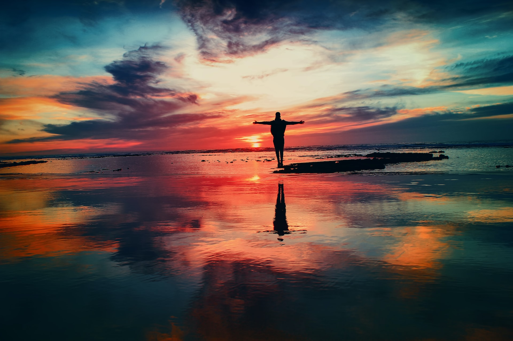

Acerca de Mí
Acerca de Mí
Hola, soy Carlos Pulgar un amante de la aventura, los deportes y la tecnologia aunque tambien soy un gran cocinero , eso si con muchas ganas de cambiar de rubro, mas especificamente hacia el ambito T.I ( tecnologia de la informatica)para poder saciar toda mi curiosidad en lo que respecta al mundo del software. Mi gran objetivo es poder desempeñarme como desarrollador fullStack en una empresa lider del mercado.


Como te contaba al inicio de mi presentación, tambien me gustan las aventuras y los deportes. Y al hacer Mountain bike mato dos pajaros de un tiro, al aventurarme por los cerros y valles de mi pais arriba de mi querida cleta , eso si cuando tengo tiempo que suelen ser para la vacaciones de verano, pero durante el resto del año salgo a andar por los cerros cercanos a mi casa , ademas de ejercitarme en casa.
En este año por fin pude lograr unos de mi pequeños objetivos que fue hacerme de un P.C de escritorio (ensamblado por mi :) ) y ademas de poder entrar a estudiar en Digital House la carrera de Certified Tech Developer, lo que me tiene muy motivado y feliz. Ahora todo depende de mi y mi gran curiosidad que me sigue trayendo vivencias inolvidables ademas de conocer muy lindas personas que comparten gustos similares a los mios. Que mas puedo decir bajo mis experiencias, solo que si lo piensas y tienes la voluntad lo puedes lograr , cree en tus capacidades y en las personas que te quieren. Y no temas a errar que asi se aprende y si te caes te sacudes y te levantas con mas fuerza.
